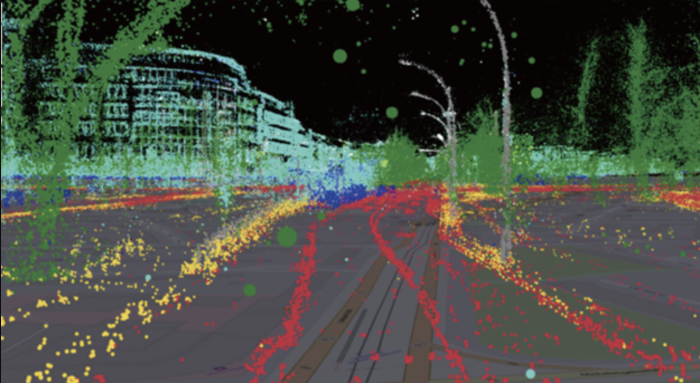

This project implements Simultaneous Localization and Mapping (SLAM) to enable autonomous robots to navigate unfamiliar environments. Using LiDAR, Visual SLAM (ORB-SLAM, RTAB-Map), and Kalman Filters, the system constructs real-time maps while tracking the robot’s position. Integrated with Reinforcement Learning (RL) and Sensor Fusion, it enhances navigation in forests, disaster zones, and extreme conditions. Runs efficiently on Jetson Nano for real-time edge processing.

A real-time AI surveillance system using Facenet, YOLO, and DeepSORT for object and facial recognition. It can detect and track multiple objects, analyze human behavior, and provide security alerts. Works with thermal cameras for low-light conditions, making it suitable for forest and extreme environments.

A dual-control system combining NLP-based voice commands and gesture recognition. If voice commands fail, gestures take over, ensuring uninterrupted control. Uses BERT, GPT, and ASR models for speech processing, integrating seamlessly with robotics for hands-free interaction.

This module optimizes path planning and obstacle avoidance using Reinforcement Learning (RL). Leveraging PPO, SAC, and DQN, it enables autonomous vehicles to learn from environments and improve navigation efficiency. Implemented with AirSim and SLAM for realistic simulation and deployment.

Deploys lightweight AI models on Jetson Nano & Raspberry Pi for low-latency, high-performance inference. Uses TensorRT to optimize CNN-based detection models, allowing on-device AI processing without cloud dependency. Enhances real-time decision-making in constrained environments.

A real-time AI monitoring system using Prometheus & Grafana for performance tracking. Logs latency, model accuracy, and resource utilization, providing alerts for system failures. Ensures reliability in critical deployments.
This project enables touchless control of an autonomous vehicle using hand gestures. Utilizing MediaPipe, OpenCV, and deep learning models, it translates real-time gestures into movement commands. The system is designed for harsh environments, ensuring precise navigation without physical contact. Integrated with reinforcement learning, it adapts to dynamic terrains.